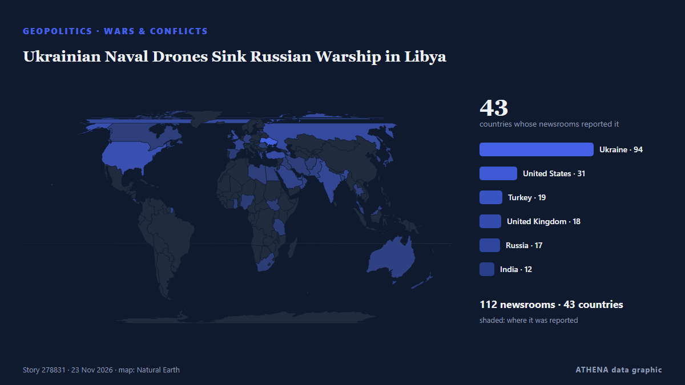

Γεωπολιτική, Πολιτική & Ασφάλεια
ΧορηγούμενοΠαρουσιάζεται από  Cybernetics and Artificial Intelligence Lab Welcome to the Cybernetics and Artificial Intelligence Laboratory, established at the Department of Business Administration of the National and Kapodistrian University of Athens. The lab is headed by Professor Dimitrios Thomakos. The lab aims to do research that can be published in top venues. Our research uses tools and methods of Artificial Intelligence, and lies in the following areas: - Forecasting - Decision making - Cyber security - Finance We are always looking forward to collaborating with exceptional students!
Cybernetics and Artificial Intelligence Lab Welcome to the Cybernetics and Artificial Intelligence Laboratory, established at the Department of Business Administration of the National and Kapodistrian University of Athens. The lab is headed by Professor Dimitrios Thomakos. The lab aims to do research that can be published in top venues. Our research uses tools and methods of Artificial Intelligence, and lies in the following areas: - Forecasting - Decision making - Cyber security - Finance We are always looking forward to collaborating with exceptional students!
Οι τίτλοι των ειδήσεων παρουσιάζονται στα αγγλικά, όπως δημοσιεύτηκαν.

Πόλεμοι & συγκρούσειςUkrainian Naval Drones Sink Russian Warship in Libya
Ukrainian naval drones sank a Russian warship in the Libyan port of Benghazi, President Volodymyr Zelenskiy said on Monday, in Kyiv's first admitted strike on Libyan soil and the latest attack along… από OilPrice.com
| 11 Νοε | 261 |
|---|---|
| 12 Νοε | 265 |
| 13 Νοε | 223 |
| 14 Νοε | 180 |
| 15 Νοε | 199 |
| 16 Νοε | 272 |
| 17 Νοε | 259 |
| 18 Νοε | 245 |
| 19 Νοε | 254 |
| 20 Νοε | 222 |
| 21 Νοε | 159 |
| 22 Νοε | 152 |
| 23 Νοε | 157 |
| 24 Νοε | 3 |
European Commission presents 22nd package of sanctions against Russia
The European Commission has presented its 22nd package of sanctions against Russia. από Ukrinform (English)
Ukraine sank Russian corvette Merkury off Libya: Zelenskyy
A Russian Navy guided-missile corvette – assessed to be the Project 20380 Steregushchiy-class warship Merkury – has been engulfed in flames following an explosion in the Libyan port of Benghazi… από Kyiv Post
Saudi Arabia intercepts Houthi drone targeting Riyadh
Coalition says UAV was intercepted and destroyed as attacks targeting the Kingdom continue. από News of Bahrain
Israel's bombardment has turned Gaza into 'toxic wasteland'
New research suggests more than 99 per cent of the Gaza Strip shows signs of contamination from Israeli attacks. από ABC News Australia
Fake Trump ribs Carney at press gallery dinner
A Donald Trump impersonator took to the stage at Ottawa's annual Parliamentary Press Gallery Dinner on Saturday, poking fun at Canadian Prime Minister Mark Carney. από The Globe and Mail
US targets Iran’s shadow banking ‘lifeline’ with new sanctions
The United States imposed sanctions on 22 entities and eight people on Monday to disrupt the shadow banking networks Iran uses to move money abroad. από Iran International (English)
With US midterms underway, courts rebuff Trump's pressure on state election officials
Nov 3 - In the hours before polls opened for the US midterm elections on Tuesday, federal judges issued a series of rulings restricting the Trump administration's unprecedented efforts to pressure… από The Straits Times
Netanyahu and Eisenkot parties resume talks to form Israel government
Former deputy governor tells Central Banking prime minister’s proposals are ‘stupid’ and ‘crazy’ από Central Banking
Israeli Strikes Kill at Least 3 in Gaza, Including Worker with UN Palestinian Agency
CAIRO: Israeli airstrikes killed at least three people in Gaza on Monday, including a man working for the UN Palestinian refugee agency UNRWA, the relief agency and local health officials said. από Arab News
Netanyahu, Eisenkot parties end talks without deal on forming Israel govt
The parties of caretaker Israeli prime minister Benjamin Netanyahu and his rival Gadi Eisenkot concluded a new round of talks on Sunday without reaching an agreement on a possible coalition… από Al-Monitor
India announces Rs 15,000 crore for flood-hit Nepal, PM Balendra Shah hails ties 'as firm as Himalayas'
Prime Minister Narendra Modi on Monday announced a package about Rs 15,000 crore for Nepal's post-flood reconstruction and development, saying the two countries are a source of support for each other… από Deccan Herald
'Jewish terrorism': Eisenkot condemns West Bank arson attacks
Israeli opposition leader Gadi Eisenkot has condemned Israeli settler attacks in the occupied West Bank as "Jewish terrorism". από The New Arab
Estonia to close border with Russia for at least six months
The decision is a response to Russia’s ongoing hostile actions against Estonia. από The Straits Times
Kenya and DR Congo agree to restore diplomatic ties after tensions over conflict
By Nana Karikari, Senior International Affairs and Political Analyst Kenyan President William Ruto and Democratic Republic of Congo President Felix Tshisekedi agreed on Sunday to restore full… από GBC Ghana Online
US intelligence chief predicts more tech outages as systems undergo upgrades
Jay Clayton said the upgrades were necessary to improve performance and cybersecurity as technological advances strain older systems. από Free Malaysia Today
Marcos pushes back on Trump’s claim of exclusive US food buys
President Ferdinand R. Marcos Jr. said the Philippines would not rely exclusively on US food and energy imports under the proposed trade deal between the two… από Daily Tribune
Ukraine says Russian strikes kill 15 in Kyiv region
DYMER: A Russian strike on a block of flats north of Kyiv killed one person after causing the building to partially collapse, Ukraine said on Sunday, warning there could be more vi... από Oman Observer
Cyprus expels two Russian diplomats over suspected espionage – Politico
Two Russian diplomats suspected of espionage have been expelled from Cyprus. από Ukrinform (English)
Lee names new FM, 3 other ministers, spy chief
SEOUL, Nov. 23 (Yonhap) -- President Lee Jae Myung on Monday named a presidentia... από Yonhap (English)
Democrats Clinch a Historic House Majority of at Least 258 Seats, the Largest Since 1992
House Democrats have achieved a historic majority by securing at least 258 seats, the largest since 1992, surpassing their gains from the 2018 midterms. από Arab News
Ireland hit with more bomb threats as security preparations ramp up for EU summit
Dublin is preparing for the largest gathering of heads of state and government ever hosted by Ireland. από TheJournal.ie
Kim Jong Un ignores Trump outreach as North Korea expands its nuclear arsenal
Trying to reach Kim Jong Un, White House officials stationed a team outside North Korea’s mission to the United Nations in Manhattan to slip a personal note from Donald Trump into a passing… από Tehran Times
Sudan: Saudi Arabia Strongly Condemns Drone Attacks On Sudanese Capital, Including UN Facility
[SNA] Riyadh, (SPA-SUNA) - The Saudi Ministry of Foreign Affairs expressed the Kingdom of Saudi Arabia's strong condemnation and denunciation of the attacks targeting the Sudanese capital, Khartoum… από AllAfrica
US Treasury presses Singapore and Malaysia on Iran sanctions
US officials urge Singapore and Malaysia to crack down on Iranian oil transfers, aviation links and front companies. από The New Arab
US Intelligence Chief Says Putin Is 'Not America's Friend In Ukraine'
Trump’s description of Putin as a friend during the APEC summit drew criticism from European allies of Ukraine. από The Straits Times
Trump on ’60 Minutes’ Reflects on Midterm Loss, Death and Forgiveness: ‘I Do Hate Some of My Enemies’
President Trump told “60 Minutes” that he blames Republican candidates and the war in Iran for the party’s midterm defeat, and acknowledged that his mass deportation policy was “too tough.” Sitting… από Variety
Van Hollen backs populism in challenge to Schumer
Closed-door secret-ballot vote to take place next month as El-Sayed, Sanders rally behind Van Hollen. από Express Tribune
Pentagon moves to restrict US-Canada defence ties
WASHINGTON: US Defence Secretary Pete Hegseth has imposed new restrictions on military cooperation with Canada, according to US media, as the Pentagon said Saturday it was refocusing the relationship… από Business Recorder
Six people killed as Russian attack destroys five-storey apartment building near Kyiv
A number of people are feared to be trapped under the rubble in Dymer. από TheJournal.ie
German army starts testing kamikaze drones and AI targeting tool in Lithuania
Germany’s army began its first tactical tests of kamikaze drones during drills on Sunday in Lithuania, where an armoured brigade of 5,000 German troops will be permanently stationed by the end of… από Cyprus Mail
‘Just wrong’: British right distances itself from Trump after Putin ‘friend’ post
Reform deputy leader calls Russian leader ‘a murderous dictator’ after US president appears to endorse him UK politics live – latest updates Reform UK and the Conservatives have distanced themselves… από The Guardian
Endurance athlete swims in Strait of Hormuz to highlight Iran war's impact on wildlife
British endurance swimmer Lewis Pugh has swum in the North Pole and Antarctica to draw attention to environmental causes. από Mainichi (English)
Nato chief pledges to defend Poland after Russian missile incursion
Warsaw accused Russia of provocation after two missiles struck southeastern Poland near the site of major European military exercises. από Free Malaysia Today
Bahrain says Iranian attack hits industrial facility, causes fire
Bahrain, which hosts the U.S. Navy's Fifth Fleet, says it has intercepted several Iranian aerial attacks over the past week. από Haaretz (English)